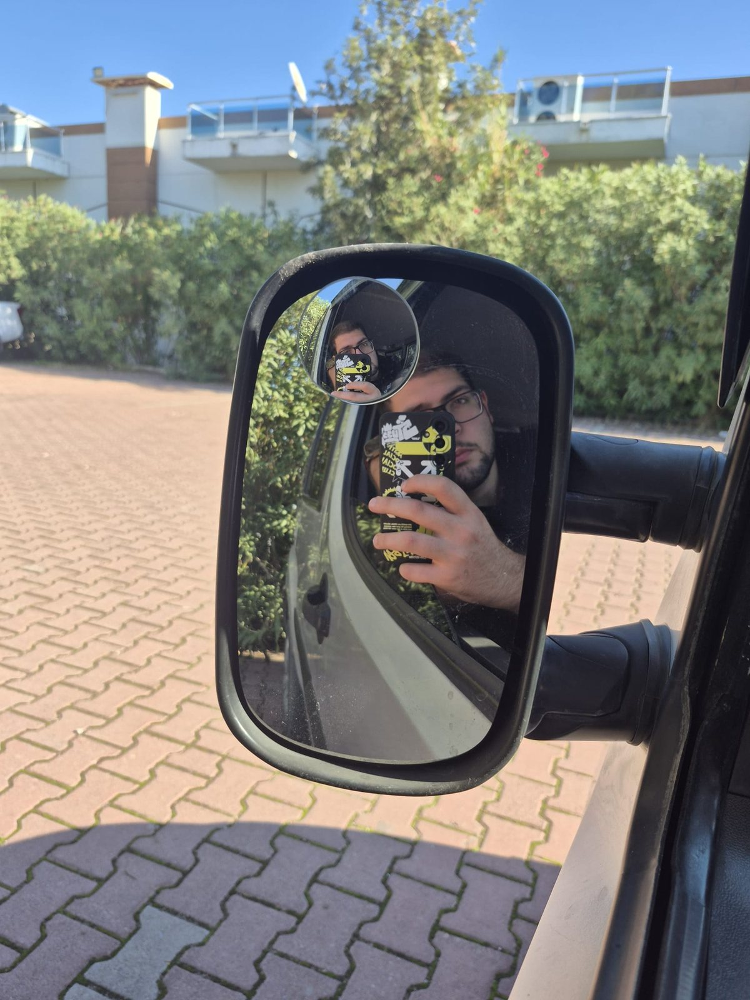
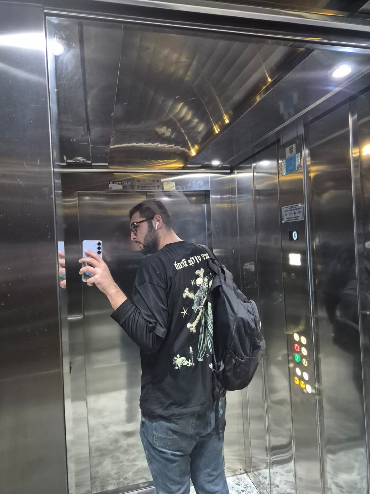

İçeriğe geç
Yiğit Yılmaz
Menü
Anasayfa
Hakkımda
Projeler
Galeri
Blog
İletişim
TR
EN
Galeri
Beni en iyi anlatan kareler.
Antik tiyatro
Taş basamaklarda kısa bir mola.
Gece ışığı
Parkta, sokak lambasının altında bir akşam.

Okul otoparkı
Ders sonrası arkadaşlarımı beklerken kendimi hoş bulup çektiğim bir fotoğraf.

Günün ilk karesi
Çantam sırtımda, müziğim kulağımda; yeni bir güne çıkarken.
Çıkmadan önce
Kapıdan çıkmadan önce aynaya son bir bakış.
Yakınlaştır
Kapat